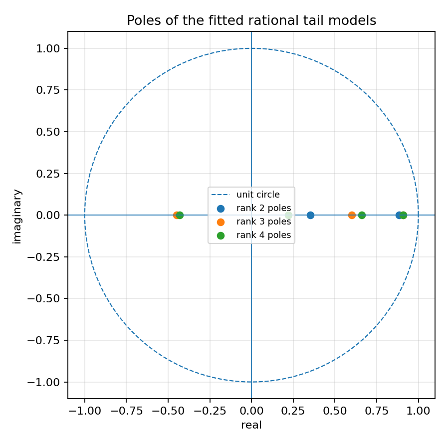
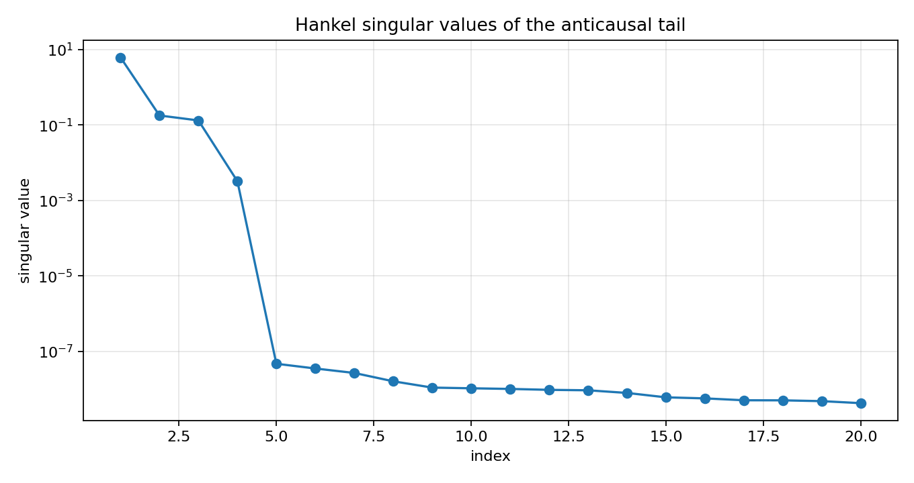
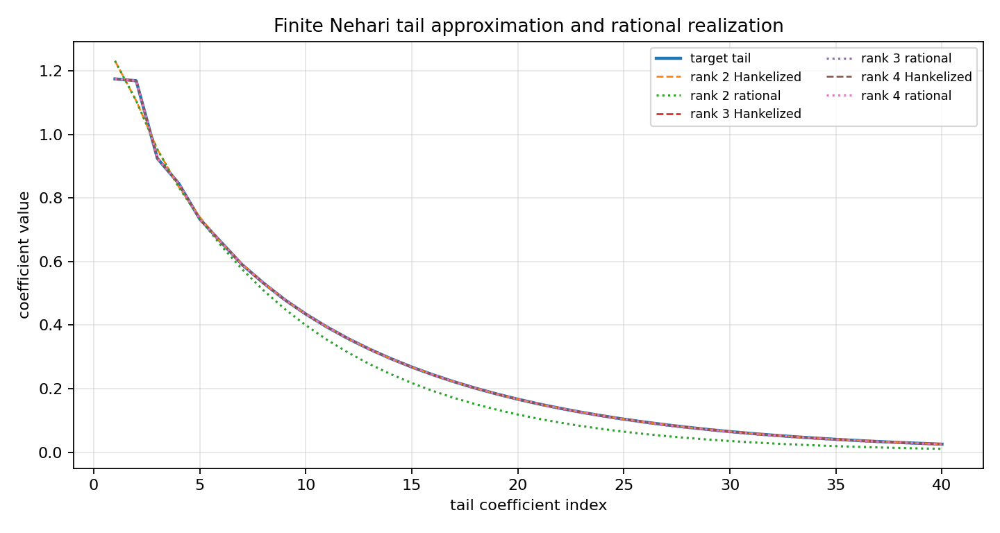

Finite Nehari tail to rational model¶
Tutorial goal
Connect the finite Nehari tail approximation to a low-order recursive/rational SISO model.
Note
New to the terminology? See the lattice DSP concept map and the causality/data-use guide for how online, offline, block, and MIMO examples should be read.
Context¶
The previous Nehari/AAK toy tutorial stops at the finite Hankel matrix. This tutorial takes
one more conservative step: after calling finite_nehari_approximate_tail, it fits a
short linear recurrence to the Hankelized tail and realizes that recurrence as a stable
rational/IIR impulse response.
This is the practical bridge from Hankel singular values to recursive filters. It still is not a full infinite-dimensional AAK or Nehari solver, but it shows how a low-rank Hankel tail can become a small rational model with poles inside the unit circle.
Key idea and equations¶
A finite-rank Hankel tail is generated by a sum of exponentials,
Equivalently, the tail satisfies a linear recurrence
The fitted recurrence gives a scalar denominator whose roots are the poles p_i.
How to read the result¶
Look for singular-value decay, agreement between the Hankelized tail and the rational realization, and fitted poles inside the unit circle.
Run command¶
python examples/finite_nehari_rational_bridge.py
Run status¶
Return code: 0
Captured stdout¶
finite Hankel matrix: 48 x 48
leading singular values: [6.126638, 0.177066, 0.130905, 0.003221, 0.0, 0.0, 0.0, 0.0]
rank=2: sigma_next=1.309e-01, tail_error=3.358e-02, rational_error=8.731e-02, pole_radius=0.8856
rank=3: sigma_next=3.221e-03, tail_error=2.639e-04, rational_error=3.433e-03, pole_radius=0.9082
rank=4: sigma_next=4.723e-08, tail_error=2.791e-13, rational_error=3.322e-13, pole_radius=0.9100
Figures¶
{kind=link}

finite_nehari_rational_bridge_poles.png¶
{kind=link}

finite_nehari_rational_bridge_singular_values.png¶
{kind=link}

finite_nehari_rational_bridge_tail_fit.png¶
Generated data files¶
Source code¶
1"""Tutorial: from a finite Nehari tail to a rational SISO model.
2
3This tutorial bridges the finite Nehari/AAK toy example to a practical
4rational-model workflow. The finite Nehari helper returns a Hankelized
5approximation of an anticausal tail. Here we ask a practical question: can
6that approximated tail be represented by a small recursive/rational model?
7
8The answer is yes for the synthetic low-rank tail used here. We fit a short
9linear recurrence to the Hankelized tail, convert that recurrence to a causal
10IIR impulse response, and compare the original tail, the finite Nehari tail, and
11the rational realization.
12
13This is still not an exact infinite-dimensional AAK/Nehari solver. It is a
14small numerical bridge from Hankel singular values to rational filters.
15"""
16
17from __future__ import annotations
18
19import csv
20import math
21import os
22from pathlib import Path
23
24import numpy as np
25
26
27
28def artifact_dir() -> Path:
29 path = Path(os.environ.get("LATTICE_DSP_ARTIFACT_DIR", "reports/example-artifacts"))
30 path.mkdir(parents=True, exist_ok=True)
31 return path
32
33
34def synthetic_anticausal_tail(n_terms: int) -> np.ndarray:
35 """Return a stable finite-rank anticausal tail.
36
37 A sum of damped exponentials has finite Hankel rank in exact arithmetic. It
38 is therefore a clean teaching object for the bridge from Hankel matrices to
39 rational/recursive models.
40 """
41
42 n = np.arange(n_terms, dtype=float)
43 poles = np.array([0.91, 0.66, -0.43, 0.22], dtype=float)
44 weights = np.array([1.00, 0.28, -0.15, 0.045], dtype=float)
45 return np.sum(weights[:, None] * poles[:, None] ** n[None, :], axis=0)
46
47
48def fit_rational_tail(tail: np.ndarray, order: int) -> tuple[np.ndarray, np.ndarray, np.ndarray]:
49 """Fit a scalar recurrence/IIR model to a tail sequence.
50
51 For a sequence ``g[n]`` generated by a stable rational model, there are
52 coefficients ``a_1, ..., a_p`` such that
53
54 g[n] + a_1 g[n-1] + ... + a_p g[n-p] = 0.
55
56 The denominator ``[1, a_1, ..., a_p]`` is estimated by least squares. The
57 numerator is then chosen so that the first ``p+1`` impulse samples match the
58 supplied tail.
59 """
60
61 tail = np.asarray(tail, dtype=float)
62 if tail.ndim != 1:
63 raise ValueError("tail must be one-dimensional")
64 if order < 0:
65 raise ValueError("order must be non-negative")
66 if order == 0:
67 return np.array([1.0]), np.array([float(tail[0])]), np.array([], dtype=float)
68 if tail.size < 2 * order + 1:
69 raise ValueError("tail is too short for the requested rational order")
70
71 x = []
72 y = []
73 for n in range(order, tail.size):
74 x.append([tail[n - lag] for lag in range(1, order + 1)])
75 y.append(-tail[n])
76 x_arr = np.asarray(x, dtype=float)
77 y_arr = np.asarray(y, dtype=float)
78 coeff, *_ = np.linalg.lstsq(x_arr, y_arr, rcond=None)
79 denominator = np.concatenate(([1.0], coeff))
80
81 numerator = np.zeros(order + 1, dtype=float)
82 for i in range(order + 1):
83 numerator[i] = sum(denominator[j] * tail[i - j] for j in range(i + 1))
84
85 poles = np.roots(denominator)
86 return denominator, numerator, poles
87
88
89def rational_tail_response(denominator: np.ndarray, numerator: np.ndarray, n_terms: int) -> np.ndarray:
90 """Generate an impulse/tail sequence from scalar IIR coefficients."""
91
92 denominator = np.asarray(denominator, dtype=float)
93 numerator = np.asarray(numerator, dtype=float)
94 if denominator.ndim != 1 or numerator.ndim != 1:
95 raise ValueError("denominator and numerator must be one-dimensional")
96 if denominator.size == 0 or abs(float(denominator[0])) < 1e-15:
97 raise ValueError("denominator[0] must be non-zero")
98
99 a = denominator / denominator[0]
100 b = numerator / denominator[0]
101 y = np.zeros(n_terms, dtype=float)
102 for n in range(n_terms):
103 value = b[n] if n < b.size else 0.0
104 for k in range(1, a.size):
105 if n >= k:
106 value -= a[k] * y[n - k]
107 y[n] = value
108 return y
109
110
111def relative_error(reference: np.ndarray, estimate: np.ndarray) -> float:
112 num = float(np.linalg.norm(reference - estimate))
113 den = float(np.linalg.norm(reference))
114 return num / den if den else 0.0
115
116
117def write_summary(path: Path, rows: list[dict[str, float | int]]) -> None:
118 with path.open("w", newline="", encoding="utf-8") as f:
119 writer = csv.DictWriter(f, fieldnames=list(rows[0]))
120 writer.writeheader()
121 writer.writerows(rows)
122
123
124def main() -> None:
125 import lattice_dsp as ld
126
127 out_dir = artifact_dir()
128
129 rows = cols = 48
130 tail = synthetic_anticausal_tail(rows + cols - 1)
131 ranks = [2, 3, 4]
132
133 summary: list[dict[str, float | int]] = []
134 approximations: dict[int, np.ndarray] = {}
135 rational_responses: dict[int, np.ndarray] = {}
136 fitted_poles: dict[int, np.ndarray] = {}
137 singular_values: np.ndarray | None = None
138
139 for rank in ranks:
140 nehari = ld.finite_nehari_approximate_tail(tail.tolist(), rank=rank, rows=rows, cols=cols)
141 if singular_values is None:
142 singular_values = np.asarray(nehari["hankel_singular_values"], dtype=float)
143
144 approx_tail = np.asarray(nehari["approximated_tail"], dtype=float)
145 denominator, numerator, poles = fit_rational_tail(approx_tail, rank)
146 rational = rational_tail_response(denominator, numerator, tail.size)
147
148 approximations[rank] = approx_tail
149 rational_responses[rank] = rational
150 fitted_poles[rank] = poles
151
152 summary.append(
153 {
154 "rank": rank,
155 "sigma_next": float(nehari["sigma_next"]),
156 "finite_nehari_tail_relative_error": float(nehari["relative_tail_error"]),
157 "rational_vs_original_relative_error": relative_error(tail, rational),
158 "rational_vs_hankelized_relative_error": relative_error(approx_tail, rational),
159 "max_pole_radius": float(np.max(np.abs(poles))) if poles.size else 0.0,
160 }
161 )
162
163 assert singular_values is not None
164
165 csv_path = out_dir / "finite_nehari_rational_bridge_summary.csv"
166 write_summary(csv_path, summary)
167
168 print("finite Hankel matrix:", f"{rows} x {cols}")
169 print("leading singular values:", [round(float(v), 6) for v in singular_values[:8]])
170 for row in summary:
171 print(
172 "rank={rank}: sigma_next={sigma_next:.3e}, tail_error={finite_nehari_tail_relative_error:.3e}, "
173 "rational_error={rational_vs_original_relative_error:.3e}, pole_radius={max_pole_radius:.4f}".format(**row)
174 )
175 print(f"wrote {csv_path}")
176
177 try:
178 import matplotlib.pyplot as plt
179 except Exception:
180 print("matplotlib is not installed; skipped figures")
181 return
182
183 fig, ax = plt.subplots(figsize=(8.5, 4.5))
184 idx = np.arange(1, 21)
185 ax.semilogy(idx, singular_values[:20], marker="o")
186 ax.set_title("Hankel singular values of the anticausal tail")
187 ax.set_xlabel("index")
188 ax.set_ylabel("singular value")
189 ax.grid(True, alpha=0.3)
190 fig.tight_layout()
191 path = out_dir / "finite_nehari_rational_bridge_singular_values.png"
192 fig.savefig(path, dpi=160)
193 print(f"wrote {path}")
194
195 fig2, ax2 = plt.subplots(figsize=(9.0, 4.8))
196 n = np.arange(1, 41)
197 ax2.plot(n, tail[:40], linewidth=2.0, label="target tail")
198 for rank in ranks:
199 ax2.plot(n, approximations[rank][:40], "--", linewidth=1.2, label=f"rank {rank} Hankelized")
200 ax2.plot(n, rational_responses[rank][:40], ":", linewidth=1.4, label=f"rank {rank} rational")
201 ax2.set_title("Finite Nehari tail approximation and rational realization")
202 ax2.set_xlabel("tail coefficient index")
203 ax2.set_ylabel("coefficient value")
204 ax2.grid(True, alpha=0.3)
205 ax2.legend(ncol=2, fontsize=8)
206 fig2.tight_layout()
207 path2 = out_dir / "finite_nehari_rational_bridge_tail_fit.png"
208 fig2.savefig(path2, dpi=160)
209 print(f"wrote {path2}")
210
211 fig3, ax3 = plt.subplots(figsize=(5.6, 5.6))
212 theta = np.linspace(0.0, 2.0 * math.pi, 512)
213 ax3.plot(np.cos(theta), np.sin(theta), "--", linewidth=1.0, label="unit circle")
214 for rank, poles in fitted_poles.items():
215 ax3.scatter(np.real(poles), np.imag(poles), label=f"rank {rank} poles")
216 ax3.axhline(0.0, linewidth=0.8)
217 ax3.axvline(0.0, linewidth=0.8)
218 ax3.set_aspect("equal", adjustable="box")
219 ax3.set_title("Poles of the fitted rational tail models")
220 ax3.set_xlabel("real")
221 ax3.set_ylabel("imaginary")
222 ax3.grid(True, alpha=0.3)
223 ax3.legend(fontsize=8)
224 fig3.tight_layout()
225 path3 = out_dir / "finite_nehari_rational_bridge_poles.png"
226 fig3.savefig(path3, dpi=160)
227 print(f"wrote {path3}")
228
229
230if __name__ == "__main__":
231 main()